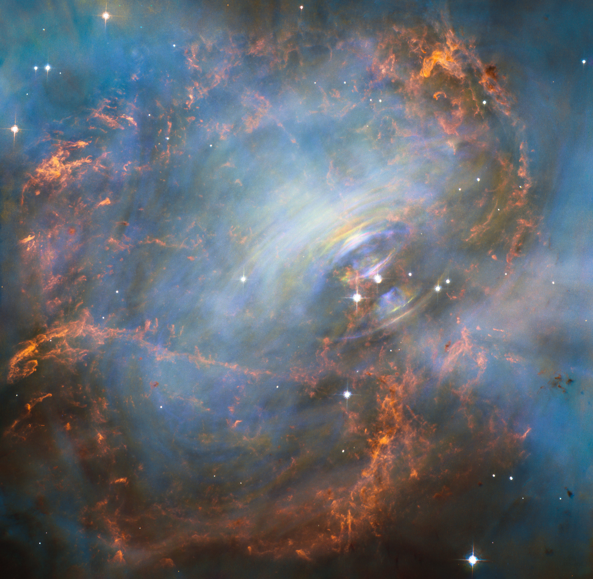
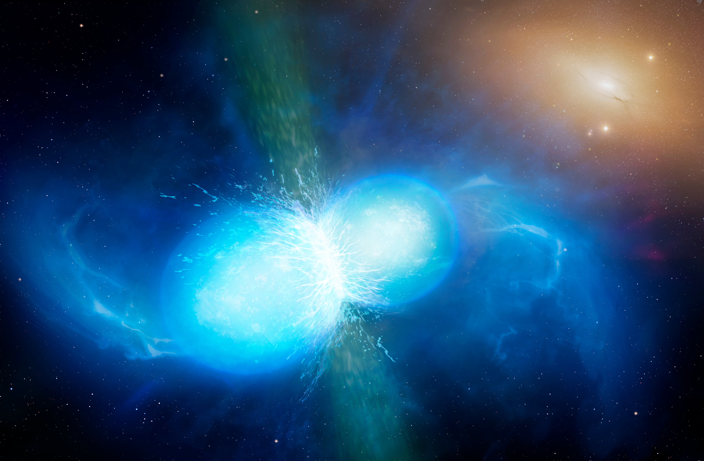

NEUTRON STARS

A neutron star is the ultra-dense leftover core of a massive star after a core-collapse supernova. It packs more mass than the Sun into a sphere roughly the size of a city. Because of that extreme density, neutron stars have powerful gravity, often spin incredibly fast, and can host some of the strongest magnetic fields in the universe.

What is a neutron star?
In simple terms: it’s a collapsed stellar core where matter is squeezed so much that electrons and protons are forced to combine into neutrons. The star doesn’t collapse further because quantum physics provides pressure (degeneracy pressure and nuclear interactions) that can resist gravity—up to a limit.
Pulsars and magnetars
Many neutron stars are observed as pulsars: rotating neutron stars that emit beams of radiation. If those beams sweep across Earth, we detect regular pulses, like a cosmic lighthouse.
A smaller group are magnetars, with extremely strong magnetic fields that can power intense X-ray and gamma-ray outbursts.
How do neutron stars form?
When a massive star runs out of fuel, its core can no longer support itself. Gravity wins and the core collapses in a fraction of a second. The outer layers rebound and explode as a supernova, while the core becomes a neutron star.
Whether the remnant becomes a neutron star or a black hole depends mainly on the mass of the collapsing core. If the core is too massive, collapse continues and an event horizon forms.

Where do we find them, and what do they do?
Neutron stars appear in different environments and affect their surroundings mainly through gravity, radiation, and magnetic fields:
- Supernova remnants: the neutron star can sit inside expanding debris.
- Binary systems: it can pull gas from a companion star and shine brightly in X-rays.
- Precision clocks: pulsars can be so stable that they act like cosmic clocks, useful for testing gravity.
For the universe, neutron stars help us probe matter at nuclear densities and extreme magnetic fields. For us, they’re a key piece in understanding where some heavy elements come from and how strong gravity behaves.

Two neutron stars together: what happens?
In a tight binary, two neutron stars orbit each other and slowly lose energy by emitting gravitational waves. Over time they spiral closer, then finally merge.
- Gravitational waves: the cleanest signature of the final inspiral and merger.
- Kilonova: glowing ejecta that can form very heavy elements (like gold and platinum) via the r-process.
- Short gamma-ray burst: sometimes a narrow relativistic jet forms.
- Outcome: a heavier neutron star or a black hole, depending on total mass and rotation.
The nearest neutron star
“Nearest” can shift as measurements improve, and some objects start as candidates. A frequently cited nearby, well-studied isolated neutron star is RX J1856.5−3754, at roughly a few hundred light-years.
Even a “nearby” neutron star is still far enough to be harmless. Only extremely close, rare events would pose a risk—and we don’t see such threats in our local neighborhood.
Neutron stars connect stellar evolution, extreme gravity, nuclear physics, and the cosmic origin of elements. They’re small in size—but huge in what they teach us about the universe.